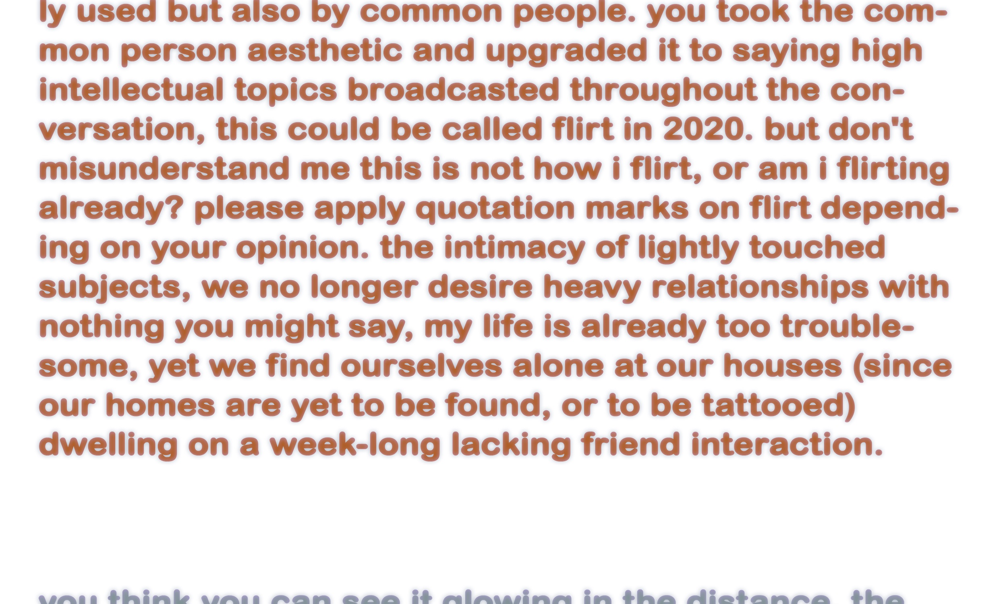
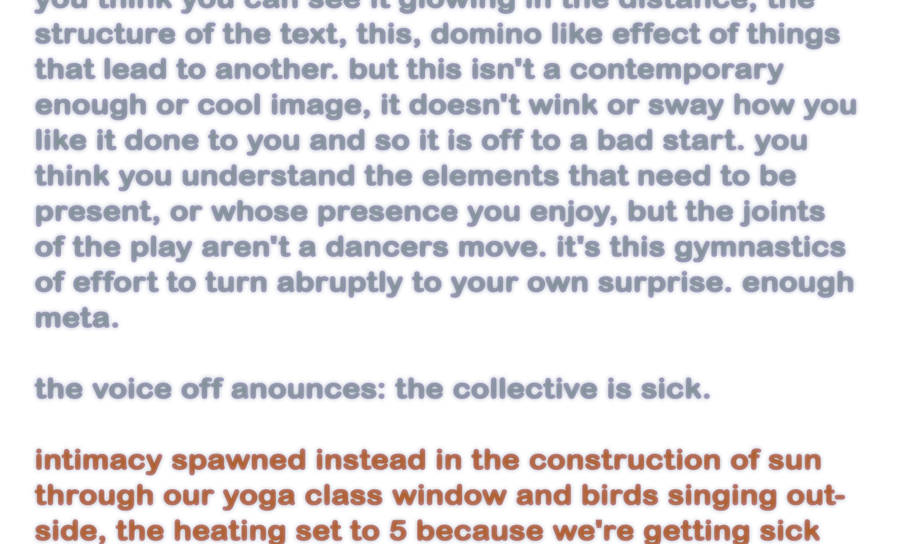

a soft-spot
from all sides our lack of vocabulary corners us in unwanted
positions, this strech we can't relax into. being
out of grid renders you suspect, creating a grid to continue
existing until it all dissolves under rose water. it's
like when i believed my own lie - life as acting school.
first lesson is embodiment and after that you forget,
the whispering secret had no chance. when did it all
begin? becoming same with those who differ, not in
sameness but in difference... my rectangle flirts with
yours and glows softly fears.
there is no narrative to support these feelings. they
slip through its web like fat drops slow and sticky -
ever present yet formless. is there a possible time line
for aimless roaming? i need new words, all the works
the service of resetting can offer.
story
story
story telling,
how do i find what i want to say? such ways, you have
to be hyper radical, hyper sharp and soft at times, like
your lips are sharply soft lipsticked, you trace a line
around them and then you blur it - voilá. and be careful
with the world radical, these days suits everyone better
to use common words, with common i mean broadly
used but also by common people. you took the common
person aesthetic and upgraded it to saying high
intellectual topics broadcasted throughout the conversation,
this could be called flirt in 2020. but don't
misunderstand me this is not how i flirt, or am i flirting
already? please apply quotation marks on flirt depending
on your opinion. the intimacy of lightly touched
subjects, we no longer desire heavy relationships with
nothing you might say, my life is already too troublesome,
yet we find ourselves alone at our houses (since
our homes are yet to be found, or to be tattooed)
dwelling on a week-long lacking friend interaction.
you think you can see it glowing in the distance, the
structure of the text, this, domino like effect of things
that lead to another. but this isn't a contemporary
enough or cool image, it doesn't wink or sway how you
like it done to you and so it is off to a bad start. you
think you understand the elements that need to be
present, or whose presence you enjoy, but the joints
of the play aren't a dancers move. it's this gymnastics
of effort to turn abruptly to your own surprise. enough
meta.
the voice off anounces: the collective is sick.
intimacy spawned instead in the construction of sun
through our yoga class window and birds singing outside,
the heating set to 5 because we're getting sick
and the hearts full of joy in a friend-only altercation.
we high five to the welcoming of another therapy goer
and we sail to a boatless reaction street. do you know
how the sea makes you want to simply cry because of
its ________ ? someone says yeah kotti makes me want
to cry for different reasons, an after berghain feeling,
i lose the thread of the conversation. have you noticed
how at the bio shop the cashier never registers the
discounted items and sells them at normal price? yes
i only got it because of it, please those 20 cents will
make a difference, i live at the lowest income option
available for a member card, we're here babe. when
did privileged people take hold of all marginalised
ways of living? take the marginalised ways of loving instead,
because we love too dearly and for that it hurts.
i wasn't happy that i couldn't tell them i was starting
to date someone new, rather older than me but new
to their agenda. he has a really uncool smile and that
makes me horny. and happy, somehow when we're together
i don't say much and think at times am i too
boring? i quickly roam for words but i don't find what
i want, story story telling.
i want to believe in the chance for change, in open
portals and trashy resistances. i wann'an open window
for bicycle riding non binary rats in pastel garments,
shaved in unexpected segments of fur, who
like badminton and drink vitamine cocktails for breakfast.
stones aren't cold by nature, it is just a lacking of
sun. caves might be warm as ... lady bugs rest on my
skin and investigate the right biting spot. badminton,
like so many other games, can't be played alone. just
like bending a language to aid trans formation, rather
trans formative action weights the balance between
sunny and windy, alone and together. the real grass
moves in front of my open eyelids, populated. the entire
population of this park is concerned with enjoyment.
me too. are we working our urge out? babes,
sports is the new drug - so is all this movement alienation?
put your muscle into... our small communities
of illusion attaining reality, or grabbing it, and saying:
who will i bump into, today? or maybe i just lay on
the grass and waste the day away because today it
feels good and that's rare. searching for the amount in
grams of tension before snapping and the amount for
relaxing without alienation, the 4 o'clock sun burns.
i think it all began when i couldn't name my desires,
how i could never lose track of the lie and its web and
so my sense of orientation developed so fully i can't
ever get lost, i know where i'm always at and so i never
slipped. instead of mouth work, direct expression, it
all went to some sort of muted fantasy to where things
could be referenceless orchestrated. it was all happening
inside of my head and so i was happy, it was
happening somehow, of course no one knew it but at
that time i couldn't trust the ones around. today it becomes
hard to attach words to these events the props
i would get, and so communication surrenders and i
don't find the words to tell you, how beautiful you are,
how hot and tender and never sharp or soft because
these are only Sims profile building behaviour guidelines
or the people you see at the club. i love how your
genitalia still doesn't have a name, how there is no reference
to what we're doing, we can simply be. i am
muted again but i don't know what i'm doing, it's like
when it all began.
YOU’VE BEEN HIT BY THE SEXY TRUCK
ONCE YOU’VE BEEN HIT, YOU HAVE TO HIT 8 OTHER PEOPLE!
IF YOU GET HIT AGAIN YOU’LL KNOW YOUR REALLY SEXY!
IF YOU BREAK THE CHAIN, YOU’LL BE CURSED WITH UN*SEXYNESS
FOR 10 YEARS SO PASS IT! HIT WHO EVER YOU THINK IS SEXY!
bad feeling, stuck on the sandal is a leaf, dry and crunchy. is there crunchy and wet? yes, the thousands
of green layers between me and there and the poetics of dis. dis engage. dis embodiment, dis membering all
parts of reality. if i went away i'd alucinate for all the time there was for a no reference flow. by the time the
references stop, you are you. a freeze in other-time. the stop of everything but here. a leaf falls down finding
its way to be stuck on a sandal. a dog threatens silence. if there was an emergency - i have no idea
who to call. where's the who to call post? by the time the emergency ceases there's nettle seeds popping,
waiting to find their way, as if finding one's way is to go down or inward, crap for a theory. in my dreams
there's always a competition, i guess because i dread participation. and you're always meant to participate,
as if life is a competition. where are we going, i want the reverse gravity button, a jetpack for silvia and fuel
for the mind. in a place with, places. we're just going back and forward not around, the earth is round as
if in its ends there isn't an amazing endless waterfall as if waterfalls are a thing of the past because now
it's dry and crunchy, and sometimes it has a pinch of sugar for it to be a snack. please stop refering to me
in any male form, i could be a nettle a rat or a dog. just not a puppy for those are overly excited about the
authority expression.
for someone who craves so deeply human contact, you sure take yourself to many deserted places.
it becomes, clearer and clearer, the specificity of such contact - the details of desire. name and voice exactly
what you want, like the elements of a salad, when your body commands your cooking, passing-by the
conscious brain, feeding your deep tissue's needs. how you can't stop eating this crunchy light-green
watery flesh, in combo with soft fatty-acid sponge. an apple blending with beetroot - all raw joy - leads for
moves, careful sequences and readings of rythyms as the balance tilts unsure. each block of happening:
a loosening tightening of bond, worst case bitter after taste, what in this case conforms, confirms, some's
resourcefulness against other's place out-of-grid.
the word community keeps on coming up perhaps stripped of consequence - but never of urge. it may
be the need that clouds the seeing in a fog of expecta- tion for being out of it, together. lime-green red outfit,
somewhat imposed dysforia on the breasts, on the chest, tangled with the so hard-fully earned self-love.
a taste for coincidence, they say, body parts associat- ed to traits and poles of the binary - behaviours constructed
in mirroring. loosing track... we are not be- yond anything, we're actually quite inside of it.
it's the glitter in my hands
it's not the glitter in my hands it's the muscle on the screen feeding muscle
for the screen it's the friends i don't have it's a question in my hands. a group of people gather,
a circle again. the weeds are the color of my hair, lightened by sun stripes and off the radar clouds i grab the
handle of my bike, we sit together. wind stopper wind blocker wind stopper wind blocker. wind: the uncontrollable
force. it locked my phone. i want to make a ball with you. yes. no poetics, just a ball. like yin yang bodies but we're the
same - two faggots like spiritual maggots stretch and slide (uuuuuuuuuuuuuuuuuuuuu) we're in a tunnel. it's dark and
wet we jump from rock to rock, i'm not scared because you're here. i feel we could fight worlds evil easily i feel we
could share the blows. i feel today the absence of any clothes to fit me, i laid cloth over cloth on the surface of
my body disappointed, i don't like this, there's too many things i am/want to be, sometimes i want to
dress like a butch, others a femme, sometimes make up, many times gaga.
i got hit, i guess, on the back bumper, a soft impact surprise, a slow realisation. i imagine the bump crash
and horn sounds at the opening of the text message. i see a great traffic jam, i feel it reverberate, all the
bumping. i enjoy the humor but if my eyes open again to let in the flood of screen light - the light flood scares
the transmitors in the brain making witty word play. i see the replacement therapy installing. that's a process
that has started long ago, no master mind could have planed the way things flow and you ask for more.
and you ask for more. the hologram of moving grass woken on the in-side of my closed eyelids.
the usual adjectives come to mind, might be time for synonymous search.
getting back, back to thoughts, never to normal, if that´s your guessing. guessing other people's thoughts
is mainly survival. i put the black beans to cook add the spices according to a connection and my stomach
makes alien sounds. it reads: its perfect. small remind- ers, i can be whatever the fuck i want, just not an... ass
holes are nice so im out of vocabulary. when will there be a language for us to use?

